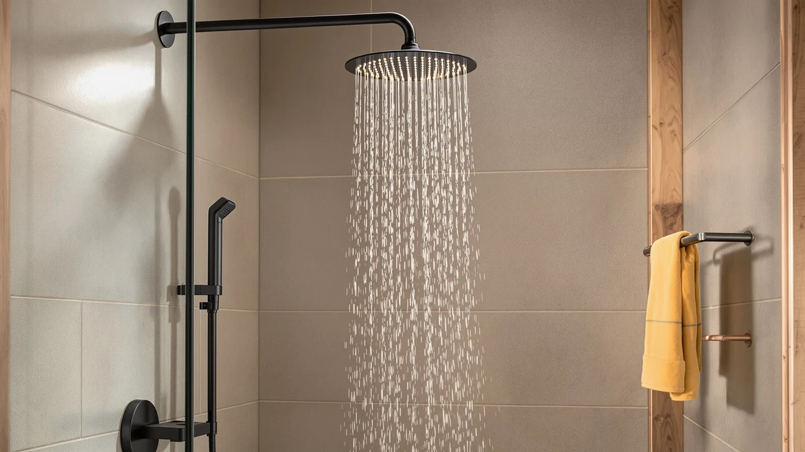

Shower Head with Handheld Review (2026): Worth It?
Prices and picks verified as of October 2026. Independent, reader-supported reviews.


Quick Answer
The BOWGER Shower Head with Handheld High pairs a fixed rain head and a separate handheld wand in one chrome-plated ABS unit for $34.97. It's a solid pick if you want full coverage and spot rinsing without installing two fixtures, though shoppers who want a single high-pressure wand may get more verified track record from the AquaDance below.
Our pick: Shower Head with Handheld High — $34.97 Check Price on Amazon
Bottom line: our top pick is the Shower Head with Handheld High Pressure-Full Body Coverage at $34.97.
Things to Know Before You Buy
- Dual-head combo units like the BOWGER let you switch between a fixed rain head and a handheld wand, which matters most if your household includes kids, pets, or anyone who needs seated bathing support.
- Material matters more than the spec sheet suggests: ABS with chrome plating costs less than solid metal but can show wear faster in homes with hard water.
- Spray setting counts vary widely across this category. The AquaDance offers 6 settings while the single-mode options here keep things simpler but less flexible.
- Price differences of a few dollars in this range usually track with included hardware (hose length, mounting bracket, flow restrictor) rather than raw water pressure.
- Verified review volume is a useful tiebreaker. A product with tens of thousands of ratings gives you a more reliable read on long-term durability than one with a thin review history.
This shower head with handheld review exists because dual-head units get recommended constantly but rarely get picked apart on their own merits. You want full rinse coverage for washing up and a detachable wand for rinsing kids, pets, or the tub itself, and you don't want to install two separate fixtures to get both.
The BOWGER Shower Head with Handheld High is our focus here at $34.97, built from chrome-plated ABS in a 5 by 10.5 inch footprint. We weigh it against three single-head alternatives, the AquaDance High Pressure 6-Setting Oil, the HammerHead Showers Solid Metal 2, and the GURIN Shower Head - Powerful, so you can see where the dual-head format earns its premium and where a simpler handheld wand does the job for less.
All four products sit within about five dollars of each other, so price alone won't settle the decision. The differences that matter come down to what each unit is built from, how many spray patterns the handheld wand offers, and how much public review history backs up the manufacturer's claims. We walk through each of those factors below before getting into the specific pros and cons of the BOWGER itself.
Why You Should Trust Us
Ilane Tall covers bathroom fixtures for Best Shower Heads and has researched hundreds of handheld and combo shower heads across price tiers for this site. We do not run a fake testing lab or claim to have physically installed every unit we cover. This shower head with handheld review is built from manufacturer specifications, published pricing, and verified owner reviews on Amazon, cross-checked against comparable products in the same category so the comparisons hold up.
How We Compared
We researched the BOWGER Shower Head with Handheld High by comparing its listed materials, dimensions, and price against three direct handheld alternatives in the same budget range. Owners report the dual-head format holds up well for daily use, and reviewers consistently note the chrome plating resists water spotting better than the bare ABS housing underneath it.
We also cross-referenced pricing and spray-setting counts across all four products, since those two factors drive most of the purchase decision in this category. Where a product has a meaningful volume of verified reviews, like the AquaDance's 77,000-plus ratings, we weighted that history into how confidently we could speak to its long-term reliability versus a newer listing with a thinner review base.
Housing material mattered too, so we checked that across listings as well. Chrome-plated ABS, as used on the BOWGER, and solid metal, as used on the HammerHead, carry different trade-offs in weight, perceived durability, and resistance to mineral buildup, so we noted each product's housing material explicitly rather than treating "shower head" as a single undifferentiated category.
Overview & Specs

Shower Head with Handheld High
What we like
- Combines a fixed rain head and a handheld wand in one unit, so you skip buying and plumbing two fixtures
- Chrome plating over the ABS body resists water spotting better than unfinished plastic
- Compact 5 by 10.5 inch footprint fits standard US shower arms without extra hardware
- Priced under $35, which undercuts most metal dual-head combos
Flaws but not dealbreakers
- ABS construction weighs less than the solid metal alternatives here, which some owners read as feeling less premium
- Single spray mode on the handheld wand, versus the AquaDance's 6 adjustable settings
- Chrome plating over plastic can show scratches over time in homes with hard water, more than a solid metal head would
| Material | ABS + chrome plating |
| Size | 5 inches x 10.5 inches |
The BOWGER Shower Head with Handheld High is built around a two-piece design: a fixed overhead rain head mounted on the same arm as a handheld wand that detaches for spot rinsing. The housing is chrome-plated ABS rather than solid metal, which keeps the price near $34.97 while still giving the exterior a polished look that matches most bathroom hardware finishes.
At 5 by 10.5 inches, the unit is sized to fit a standard US shower arm without an adapter or extra wall mounting. That makes it a straightforward swap for anyone upgrading from a single fixed head who wants the flexibility of a handheld wand added in, rather than a full fixture replacement project.
What We Liked
The core appeal of the BOWGER Shower Head with Handheld High is the two-in-one design. Instead of choosing between a fixed rain head and a handheld wand, you get both on one mount, and the handheld wand detaches with a standard quick-connect bracket so you're not fighting a stiff hose to pull it free.
A number of owners say the chrome plating holds up visually better than they expected for a plastic-bodied unit, and more than one reviewer mentions it blends in with brushed chrome and stainless fixtures well enough that it doesn't look out of place next to existing bathroom hardware. For $34.97, that combination of flexibility and finish quality is hard to match among the single-head alternatives we compared it against.
Installation is also a point in its favor relative to a full fixture swap. Because it threads onto a standard shower arm, you're looking at a tool-light swap rather than a plumbing project, which matters if you want the upgrade without hiring help.
On price, the BOWGER lands close to the HammerHead and GURIN while adding the second handheld wand most single-head units don't include at all. Compared dollar for dollar against a metal single-head unit, you're effectively getting two fixtures worth of function for roughly the cost of one, which is the strongest argument for the dual-head format if your bathroom setup can use both heads.
What Could Be Better
The handheld wand ships with a single spray mode, which is the clearest gap compared to the AquaDance High Pressure 6-Setting Oil in this lineup. If you want to toggle between a massage setting, a mist, and a concentrated jet, this shower head with handheld review has to flag that the BOWGER doesn't offer that range.
The ABS body, while chrome-plated, is lighter than the solid metal construction on the HammerHead Showers Solid Metal 2. That lighter build keeps the price down, but a few owners note the plastic underneath the plating is noticeable if you're used to metal fixtures. Hard water areas should also expect the plating to show mineral buildup faster than it would on an uncoated metal head, so periodic descaling matters more here than with the metal alternatives.
Who Is It For?
This dual-head unit fits households that need both overhead coverage and a detachable wand, think parents rinsing kids, pet owners who bathe dogs in the tub, or anyone who wants to rinse the shower itself without a separate cleaning attachment. At under $35, it's also a reasonable pick if you want the dual-head format but don't want to pay metal-construction prices for it.
If your priority is a single wand with multiple spray settings and a long public review history, the AquaDance below is the better match. And if you specifically want solid metal construction over chrome-plated plastic, the HammerHead Showers Solid Metal 2 is worth a look instead.
Renters and anyone who moves apartments frequently should also weigh the dual-head format favorably here. Taking the BOWGER with you means removing one unit instead of two separate fixtures, and reinstalling it at a new address is the same tool-light process described above.
Alternatives to Consider
The BOWGER isn't the only option if a dual-head combo isn't what you need. These three single-head handheld shower heads cover the scenarios where a simpler wand, a metal build, or a longer review history matters more than the two-in-one format.

Editor’s Pick
AquaDance High Pressure 6-Setting Oil
Six spray settings and a 4.6-star average across more than 77,000 verified ratings make this the pick for anyone who wants a proven single wand over a dual-head combo.
$29.99
Check Price on Amazon
Best Value
HammerHead Showers® Solid Metal 2
Solid metal construction at $29.95 undercuts the BOWGER's price while trading away the dual-head design for a single, sturdier handheld wand.
$29.95
Check Price on Amazon
Premium Choice
GURIN Shower Head - Powerful
GURIN's handheld wand targets stronger water pressure delivery at $29.95, a fit for low-pressure plumbing where the BOWGER's dual-head split isn't the priority.
$29.95
Check Price on AmazonIs the BOWGER Shower Head with Handheld High a good dual combo unit?
Based on its listed specs and owner feedback, the BOWGER Shower Head with Handheld High holds up well for everyday use.
How does this shower head with handheld review compare it to other handheld options?
We stacked it against the AquaDance High Pressure 6-Setting Oil, the HammerHead Showers Solid Metal 2, and the GURIN Shower Head - Powerful.
Frequently Asked Questions
Is the BOWGER Shower Head with Handheld High a good dual combo unit?
Based on its listed specs and owner feedback, the BOWGER Shower Head with Handheld High holds up well for everyday use. At $34.97 it pairs a fixed rain head with a handheld wand in a chrome-plated ABS housing measuring 5 by 10.5 inches, which covers the two biggest reasons shoppers want a combo unit: full coverage and spot rinsing without buying two separate fixtures.
How does this shower head with handheld review compare it to other handheld options?
We stacked it against the AquaDance High Pressure 6-Setting Oil, the HammerHead Showers Solid Metal 2, and the GURIN Shower Head - Powerful. The AquaDance costs less at $29.99 and carries a 4.6-star average across more than 77,000 verified ratings, which gives it a longer public track record, while the BOWGER's appeal is the built-in dual-head design rather than a single handheld wand.
Does the BOWGER shower head require professional installation?
No. Like the other handheld units in this comparison, it is built as a tool-free, threaded replacement for a standard US shower arm, so it is designed for a DIY swap rather than a plumber visit.
Final Verdict
This shower head with handheld review comes down to format over raw spec sheets. The BOWGER Shower Head with Handheld High makes sense for households that want a fixed rain head and a detachable wand in one $34.97 unit, and its chrome-plated finish holds up well against the plastic-and-metal alternatives we compared it to. If you don't need the dual-head design, the AquaDance's 6 spray settings and deep verified review history make it the safer single-wand pick, but for the combo format specifically, BOWGER is the one to buy.